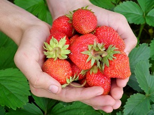

Miért fogyasszunk sok gyümölcsöt?
A zöldségek és a gyümölcsök nagyon fontos szerepet töltenek be az egészségünk
megőrzésében. Nagyon
sok vitamint, ásványi anyagot és antioxidánst tartalmaznak, amelyek felveszik a harcot a szabad
gyökökkel szemben. A szabad gyökökről azt tartják, hogy számos betegség kialakulásáért felelősek,
például a különböző szívbetegségek, a cukorbetegség és a rák.

Az eper
Az eper vagy kerti eper, termesztett eper, ananászeper (Fragaria × ananassa) az eper
(Fragaria) nemzetségbe tartozó hibrid növény, amelyet álterméséért termesztenek; a köznyelvtől eltérően
a szakmai elnevezése szamóca. Az eper és szamóca kifejezések egysége vagy különbsége, nemzetközi,
nyelvtani, és nyelvtörténelmi értelmezésben nem tisztázott. Neve a német Erdbeere szóra vezethető
vissza. Az epret nagy földrajzi alkalmazkodóképessége és elterjedése miatt szinte a világ minden
országában termesztik. Évelő, tőrózsát fejlesztő növény.
Fogyasztása
Az eper rendkívül alak- és formagazdag növény, ma már szinte minden felhasználási célra
találunk speciális fajtákat. A friss fogyasztásra alkalmas fajtáknál fontos, különösen, ha eladásra
szeretnénk termelni, a termés alakja, mérete, színe, íze, zamata, érési ideje, szállítható- és
tárolhatósága.A konzerv- és hűtőipar igényli a közepes nagyságú, egyenletes felületű, tömör húsú,
világosvörös színű termést, amely mélyfagyasztás után is megőrzi ezeket a tulajdonságokat. A sokféle
igény kielégítése nagyon nehéz, de a nemesítők megpróbálnak minél több felhasználási célra alkalmas
fajtát előállítani. Nyersen, cukrozva, vagy tejszínhabbal tálalva a gyerekek kedvence, de eperhabot is
készítenek belőle. Kitűnő süteményekbe, főleg gyümölcstortákhoz, szörpnek, dzsemnek, bólé és gyümölcsbor
készítésére is alkalmas. Magyarország legfontosabb epertermesztő vidéke a Somogy megyei Csököly
környéke.